Next: Forward and backward traveling
Up: transmission_line
Previous: The wave equations
The transmission line is typically used to connect a voltage source
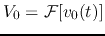 with output (internal) impedance 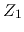 and a load
of input impedance 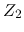, as shown in the figure.
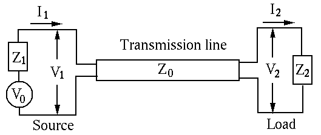
In the following we will analyze the transmission line in the frequency
domain, in which all impedances such as , , , the voltage
and current 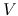 and  (in phasor forms), and all coefficients 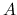,
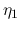, 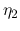, are functions of
(in phasor forms), and all coefficients 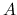,
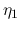, 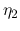, are functions of  . We will therefore drop
the argument and use capitalized letters without argument to
represent these variables.
. We will therefore drop
the argument and use capitalized letters without argument to
represent these variables.
Next: Forward and backward traveling
Up: transmission_line
Previous: The wave equations
Ruye Wang
2016-05-20